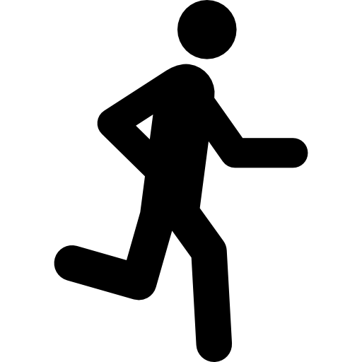

<ion-card (click)="activityWatcher.state == 'Run' ? null : showTrack()">

  <ion-card-header class="ion-no-padding">

    <ion-row id="ion-card-header-top">
      <ion-col class="ion-text-start">
          
      </ion-col>
      <ion-col class="ion-text-end">
        <ion-icon name="caret-down" id="icon-actions-open" (click)="actionButtons($event)"></ion-icon>

      </ion-col>
    </ion-row>

    <ion-row  class="ion-no-padding">
      <div id="card-action-buttons">
        <ion-icon name="calendar-outline" class="icon-actions"></ion-icon>
        <ion-icon name="trash-outline" class="icon-actions" (click)="deleteTrack()"></ion-icon>
      </div>
    </ion-row>

  </ion-card-header>

  <ion-card-content>

    <ion-row>
      <ion-col class="ion-text-center" size="4">
        <ion-icon name="calendar-outline" class="icon-content"></ion-icon><br>
        {{ getTime(track.startAt) }}
      </ion-col>
      <ion-col class="ion-text-center " size="4">
        <ion-icon name="alarm-outline" class="icon-content"></ion-icon><br>
          {{ getDuration() }}
      </ion-col>
      <ion-col class="ion-text-center" size="4">
        <ion-icon name="analytics-outline" class="icon-content"></ion-icon><br>
        {{ getDistance() }} Km
      </ion-col>
    </ion-row>
    
  </ion-card-content>
  
</ion-card>